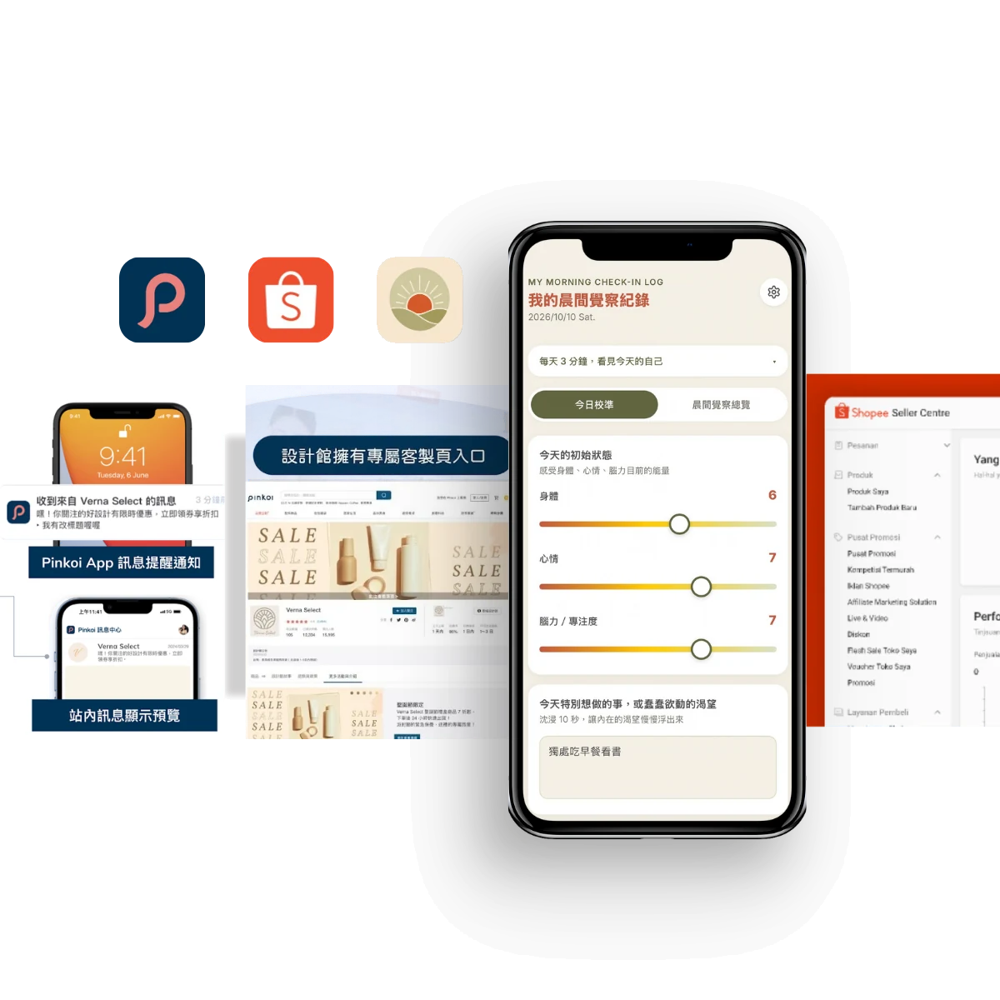
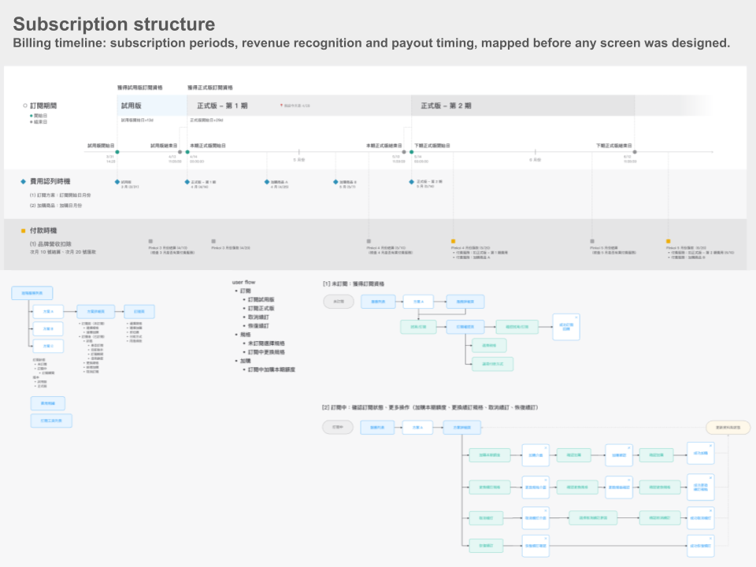
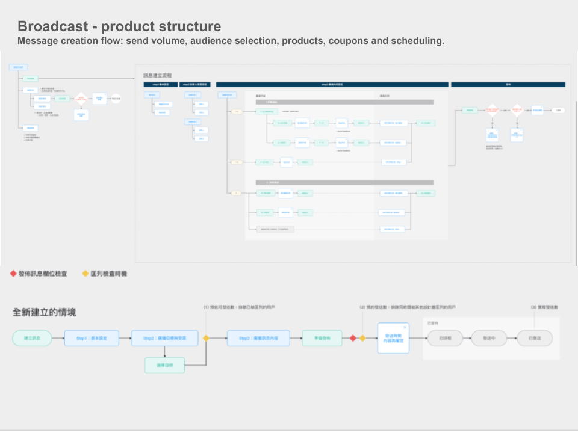
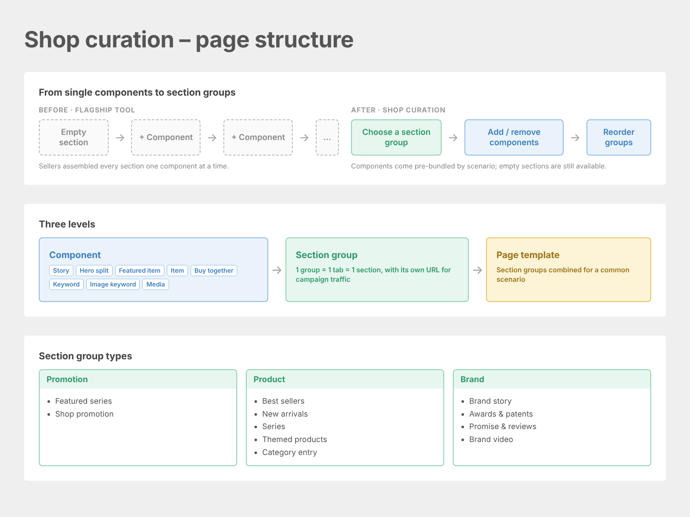

Claire Ho
Product Manager
Product Strategy · Growth · 0→1
From an ambiguous business goal to a launched product.
I design mechanisms that work for both users and the business, grounded in data and user insights.
B2B SaaS, growth programs and independent product work.

Core strengths
Four strengths I bring to product and strategy work.
Turn unclear needs into products.
Find the signal behind user behavior.
Design systems where multiple goals can work together.
Take ideas beyond plans.
How I work
I turn complex problems into structured, workable solutions.
Frame the problem
Turn ambiguity into a problem we can act on.
Validate with evidence
Use data and user insight to test assumptions.
Prioritize the goal
Focus effort where it can move the outcome most.
Make the trade-offs
Be explicit about what we choose — and what we give up.
Learn and adjust
Use what happens in the real world to shape the next decision.
Each project below marks the steps it shows most.
Selected work
Four projects. Four ways I solve problems.
Project 01
Pinkoi’s first subscription SaaS for sellers
I built the commercial and product foundation for a new paid service, from the subscription model and pricing to the first two products.
- Goal
- Grow platform revenue through Pinkoi’s first paid service for sellers, on a subscription structure that fits Pinkoi.
Roadmap: one foundation, then paid tools
Build the foundation before scaling paid tools
Plans, trials, billing and terms needed to work as a shared subscription system before individual tools could scale.
Design around seller goals and reachable audiences
Sellers choose a marketing goal; audience and product selection follow, with plans sized to the audience they can reach.
Upgrade an existing tool instead of rebuilding
Reworked the Flagship tool with templates, onboarding and direct links to page sections, focusing limited front-end resources on high-value improvements.
Key decisions
Set a clear bar for paid value
Prioritized capabilities that could deliver meaningful commercial value beyond what sellers could achieve through existing free tools.
Balance adoption with monetization
Designed low-friction entry points and goal-based workflows alongside pricing structures that reflected sellers’ reachable audiences and spending potential.
MAU target achieved in about 10 days after launch
Subscribed shops by 9/30 ÷ MAU target · free trials includedAverage broadcast open rate
Users who opened within 7 days ÷ recipients, averaged across all broadcasts by 9/30Support tickets about subscription usability
Tickets about understanding the subscription, the flow or billing, since launchMy role
- Project owner: led the paid service from planning to launch
- Strategy: set the paid-feature rule and the order of the three products
- Business model and pricing: subscription model, plans and pricing
- Roadmap and product documents: priorities for the infrastructure and every feature
See how I made the decisions For each product: why it was needed, the key decisions and what happened. Subscription systemSegmentation broadcastShop curation tool See the full details
A. Subscription system
Why
Every paid tool needed plans, trials, billing and terms that fit Pinkoi, were easy to understand and could support future bundles.
Key decisions
- A clear rule for paid features: they must add business value and stay exclusive to keep their edge. Features were ranked by business value first, then development cost.
- Minimum structure, built to expand: the first version included only what launch required, but the structure could already support future models, from single-tool subscriptions to bundles of several tools.
- Low friction from day one: buy any time, start right away, with a freemium entry point, to speed up adoption and lift early MAU and spending.
Result
- Planning and interface design done in about two months.
- Launched in September, with no support tickets about understanding the subscription, the flow or billing.

B. Segmentation broadcast
Why
Internal goal
It met both tests of the paid-feature rule I set: it gives sellers a business benefit that free tools cannot, reaching specific buyers, and it keeps that edge only when access is limited.
User feedback and insights
At the time, sellers had no way to reach specific buyers on their own, and most shops had small audiences.
Key decisions
- Sized plans by reachable audience: checked how many buyers each seller could reach, so no one buys a plan with no audience, then compared plan versions on a conservative ROAS.
- Priced for two goals: a free trial on the lowest plan to grow MAU; lower unit prices on higher plans and capped, higher-priced add-ons to lift spending.
- Goal-based design: sellers pick one of 6 marketing goals, and audience, products and send size follow. AI-based reach helped small shops find new buyers; copy templates and optional offers kept effort low.
Result
- MAU target achieved by 09/30 (Achv% 121%: subscribed shops ÷ MAU target).
- Average open rate 15.4% (users who opened within 7 days ÷ recipients), reaching the 15% assumption used in pricing.
- Average CTR 19.4% (users who clicked ÷ users who opened, within 7 days), within the second tier of Shopee’s broadcast benchmark, 15 to 30%.
Six goals, each with its own audience and products
| Goal | Who receives it | Products | Suggested send size |
|---|---|---|---|
| New buyer reach | Buyers likely to be interested, found with AI | System-picked | 300 and above |
| New buyers for picked products | Buyers likely to be interested in the seller’s chosen products | Seller-picked | 300 and above |
| Unpaid cart | Buyers with the shop’s products in their cart | System-picked | 250 and above |
| Wishlist conversion | Buyers who saved the shop’s products | System-picked | 250 and above |
| Followers and visitors | The shop’s followers and visitors | Seller-picked | 300 and above |
| Past buyer repurchase | Loyal buyers: the top 25% by spending in the past year | Seller-picked | 250 and above |
Swipe or scroll sideways to see the full table.

C. Shop curation tool
Why
Sellers needed more than targeted messages: they needed branded, campaign-specific pages to tell stories, organize product series, and guide visitors to relevant content.
Rather than build a new tool from scratch, I upgraded Pinkoi’s existing Flagship tool into a paid service, prioritizing improvements that could deliver additional commercial value within limited front-end capacity.
Key decisions
- Prioritize high-value improvements over a rebuild: I reviewed the existing tool’s architecture and user feedback, then prioritized what to retain, improve and add based on incremental commercial value and limited front-end capacity.
- Balance guided creation with customization: I introduced templates for common marketing scenarios and onboarding guidance, while retaining modular, editable page sections so sellers could create relevant pages without starting from scratch.
- Make each section a destination: I gave page sections independent URLs, allowing sellers to direct campaign traffic to specific themes or product series instead of only to the top of a page.

Project 02
Finding data-led levers to grow acquisition and retention
I started from advertiser behavior, segmented users by spend and ROAS, and turned the patterns into a controlled test with tailored interventions.
- Goal
- Move every group toward the top right: strong results and higher investment, a long-term, stable relationship with ads.
Existing users, grouped by ad spending and ROAS
Lucky hits
Ads already work, but the seller does not see the value yet.
High potential
Goal for every groupUnaware
Barely using ads. Left out of the test.
Easily discouraged
From segment to result
Key decisions
Segmented by spend and ROAS
Below a certain budget, ads get too few impressions to produce orders. That pointed to sellers with good products but budgets too small to show it.
Tailored help, in positive language
Each group got the help it needed, worded to build confidence, and was measured against a random control group.
Growth in the rate of new users starting ads: 1.7 percentage points higher than the control group
(Start rate of sellers who saw the tip ÷ start rate of the control group) − 1 · phase 1Growth in existing-user retention: 3.63 percentage points higher than the control group
(Retention of sellers who saw the tip ÷ retention of the control group) − 1The insight also became a new segmentation used by AMs after the test. With little development capacity at the time, it also produced two product needs for later: pinned tips, and copy by user type.
My role
- Test owner: led the test end to end
- Data and segmentation: reviewed advertiser data and defined the user groups
- Test design and copy: set up test and control groups and wrote the message for each group
- Analysis: ran interim and final analysis, and turned results into AM segmentation and product needs
See how I made the decisions What I noticed, what I decided and why, at each step of the test, plus results by user type. Data reviewHypothesisTest designAnalysisResults See the full details
1. Start from the data
- Noticed: patterns across performance, spending, how long ads ran, and seller profile such as GMV and category.
- Decided: ROAS and ad spending as the key segmentation metrics, based on how the ads tool and its advertisers work.
2. Turn behavior into a hypothesis
- Noticed: ads are paid per click and stop showing once the daily budget runs out. With too small a budget, a seller gets too few impressions, and after click and conversion rates there are no orders and no ROAS.
- Decided: to test the hypothesis that some sellers have good products but budgets too small to show it.
3. Design the test
- Decided: four groups for existing users, two for new users; leave out the low-spend, low-ROAS group; one tailored message per group in positive language; random, even test and control groups.
- Why: focus effort where a tip could change behavior, and keep the comparison fair.
4. Analyze while it runs
- Planned the test in about one month, and ran 4 interim analyses, each in 1 to 3 working days.
Results by user type (sellers in the test group who saw the tip, compared with the control group)
| User type | Goal | Result |
|---|---|---|
| New users | Acquisition | Test sellers who saw the tip made up 21.6% of all sellers who started ads that month in the first phase, and 12.42% in the second phase.New advertisers who saw the tip ÷ all new advertisers that month |
| New users | Acquisition % | The rate of starting ads was 1.7 percentage points higher than the control group (about 236% growth).Sellers with no prior ads who started during the test ÷ new-user sellers in the group |
| Existing users | Retention % | Average retention was 3.63 percentage points higher than the control group (about 4.22% growth).Sellers active the week before who stayed active during the test ÷ those sellers |
| Existing users | Ad performance | About 17% improved impressions and CTR; 15% improved ROAS and daily spending.Sellers whose metric improved after seeing the tip ÷ sellers who saw the tip |
| Churned users | Reactivation % | Reactivation was 0.4 percentage points higher than the control group (about 16.20% growth).Sellers inactive the week before who restarted ads during the test ÷ those sellers |
Swipe or scroll sideways to see the full table.
Project 03
A multi-party growth mechanism that added US$2.5M+ in ad spending
The challenge was not simply getting sellers to spend more. Many struggled to operate ads effectively, leading to poor results and churn.
The solution shifted from product intervention to ecosystem design
One program, four incentives
| Party | Goal | Program lever |
|---|---|---|
| Seller | Better ad results | Agency execution + rebates |
| Sales | Hit targets | Incentive to move sellers toward the next package |
| Ads team | Spending, retention, ROAS | Growth without having to operate every seller’s ads |
| Agency | Stable business | Recurring seller volume + fee income |
Ad spending added in nine months, beyond the growth of sellers who did not join
Joined sellers’ Jan–Sep 2020 spend × (133% − 43%) · converted at about 28 TWD per USDAd spending growth among participating sellers, compared with +43% for listed sellers who did not join
(Jan–Sep 2021 ad spend ÷ Jan–Sep 2020 ad spend) − 1, per group, same target listSellers who signed a long-term package after the agency trial
Sellers who signed a package ÷ sellers who joined the trialMy role
- Program owner: designed and ran the whole program
- Seller selection & targets: chose sellers with data and set a growth target for each
- Mechanism design: package levels, agency fees and rebates
- Tracking & partnership: tracked spending, contracts and rebates, and led the agency partnership
See how I made the decisions The program flow, why the model worked, the incentive structure, results and what I owned end to end. Program flowWhy the model workedIncentive structureResultsWhat I owned See the full details
01. Program flow
Select sellers with data
From tens of thousands of sellers to a priority list: high GMV, low take rate compared with peers
Diagnose and forecast
Shop check-up and expected ad results
Free 4-week trial
An official agency runs the ads; Shopee pays the fee
Long-term package
Quarterly or half-year, with rebates and incentives
Track and reward
Monthly spending checks, rebates when targets are met
Take rate = ad spending ÷ shop GMV, a core metric Shopee Ads tracks. Sellers with a take rate below their peers had relatively low ad investment and room to grow.
02. Why the model worked
An agency runs the ads first
Many sellers struggled to run ads effectively. Shopee covered the first month of agency fees for selected sellers, so they could experience professional execution before committing their own budget.
Rewards grow with commitment
Higher-spend packages offered lower agency fees and higher future ad credits, giving sellers a reason to keep investing.
03. Incentive structure
Falls as commitment grows
Paid after the free trial, lower on larger packages.
Rises as commitment grows
Higher on larger packages and longer contracts.
Rebates can only be used later
Paid as future ad credits, so every reward brings sellers back.
Agency fee falls
Across 16 package levels
Rebate rises
Half-year Quarterly
Every rebate and incentive % was calculated against Shopee’s internal ROAS benchmark, so the program stayed profitable.
04. Results
Sellers who joined started lower and ended higher
Take rate median, same quarter in 2020 and 2021From trial to long-term package
Number of sellers05. What I owned, end to end
1. Seller selection
- Four data rules (2021 Q3 batch): average shop GMV over 1M and ad spending over 10K from January to July, ROAS no more than 1 above the category, and an August take rate gap in the lower two quartiles.
- The rules narrowed the list to 168 sellers with room to grow.
2. Mechanism design
- 16 package levels, quarterly or half-year, with every % checked against internal ROAS.
3. Growth targets
- A target for each seller, tiered by sub-seller type, category and take rate gap. The further below peers, the higher the target.
4. Tracking
- A tracker comparing sellers who joined with those who did not, plus monthly spending reminders, contract checks and rebate qualification.
5. Agency partnership
- Ran the partnership end to end: capacity per batch, pitching decks, seller meetings, 2-week reports and closing reviews.
Project 04
Morning Check-in: from a personal problem to a live PWA
I took a problem I experienced myself from a simple morning check-in to a live product, validating the idea through four MVP versions and building the final version with AI-assisted development.
- Problem
- Holding every day to the same standard leads to guilt on bad days, and to burnout.
- Goal
- Help people decide each morning how much energy to spend, based on how they actually feel.
Phone note
+ iPhone Shortcut
Google Form + Sheets
Weekly email report, first friend beta
AI prototype
Claude artifact, daily to-do list added
Full PRD + Claude Code
A three-phase roadmap
Live Firebase PWA
Public launch
Each version shaped by my own daily use and beta feedback
Versions tested before the public releaseGoogle sign-in · sync · push notifications
Problem → product → build → launch
How I make product decisions
Importance sets the complexity ceiling
Non-core features stay as simple as possible: one less condition is one less future bug.
Technical constraints become product decisions
When a technical limit appears, I go back to the core problem and look for a simpler way around it.
My role
- Solo builder: owned the product from start to finish
- Product planning: problem definition, PRD and a three-phase roadmap
- Design: flows, interface and copy
- Development: built with AI-assisted development
- Launch and iteration: public release, user feedback and updates
Track 1: Product planning What I built and why: the features, how I checked it worked, and the decisions that shaped it. What it isValidatePrioritizeTrade-offsLearn & adjust See the full details
What it is
The morning check-in
Around it
Validate
- Daily use and friend betas: I used it every morning and tested each version with friends, checking it helped before moving on.
- User feedback shows why it works:
| User | Feedback (translated from Chinese) |
|---|---|
| User G | “It’s like treating yourself as a plane. Before take-off each day, you check your fuel, the weather and your gear, then decide how far and how high to fly today.” |
| User V | “Sometimes I scroll back to a line I wrote to myself long ago, and I feel comforted by who I was then.” |
Prioritize
- One check-in a day, in the morning only, to test whether the lowest-friction version is used day after day.
Trade-offs
- Change pace mid-day: even after filling in tasks, users can switch pace during the day, for example from 80 to 60, and all tasks and ticks stay. Life changes, and I want the product to support adjusting so it never becomes a mental obstacle.
- Placement instead of logic: the install prompt felt too heavy at the top. Rather than code rules for when to show it, I moved it to the bottom of the page: people who scroll that far are already using the tool.
Learn & adjust
- 4 MVP versions, each shaped by my own use and beta feedback.
- Reworked the “Today’s inner desires” options: some, such as “security”, were almost never chosen because they were too abstract for a single day. I replaced the set with options closer to how a day feels, and removed those that overlapped.
Track 2: Technical decisions Four short cases on turning technical constraints into product decisions. I think features through in Claude, and hand them to Claude Code only once the spec is settled. Data modelSpec reviewNot builtConstraint to decision See the full details
Data model instead of a patch
The to-do list split the user’s text into items, then matched each item to its earlier checked state by its text. Change one character and the item looked new, so the tick disappeared.
Instead of patching it with more conditions, I reframed it as a data model problem: each item is now stored on its own and identified by position, so the bug can no longer happen. Seven pieces of old logic were deleted; more code was removed than added.
Spec review before building
I ask Claude Code to read the spec before writing code and flag anything unclear. For push notifications, it raised five issues before starting. For each, I first check whether it is a misunderstanding of the requirement or a technical limit. For example, an iOS limit had been wrongly applied to Android, so I corrected the spec.
Every decision went into a “read before building” section at the top of the spec. This is how I work with engineers: find the real cause first, and look for a way around a technical wall before pushing through it, keeping risk, bugs, complexity and build time down.
A feature deliberately not built
Editing past entries is a rare need, but it would complicate the data structure and affect cross-device sync and offline use. That would lengthen development and delay Phase 1: a public release to test demand.
Technical constraint → product decision
- Notifications on desktop: the notification setting is saved in the cloud and shared across devices, but permission belongs to a single device. A user who turned it on in their phone would see “On” on their computer, which cannot receive it. Since notifications here are for mobile, the section is hidden on desktop and the conflict disappears.
- Time zones and reminders: reminders follow each user’s own time zone, detected automatically, so no one has to pick from nearly 400 zone names. Reminder times come in 30-minute steps: flexible enough for users, while the server only checks 48 times a day, keeping it simple and reliable.
Other work
More of how I build, teach and work with people.

Monthly 1:1 Coaching Practice
A coaching service. Also a codebase.
A live coaching service website I designed and built end to end, from service positioning and offer structure to conversion flow and deployment.
Visit the live site ↗
Chronicle: Record in the moment, interpret in hindsight
A timeline-based note product concept that turns personal records into a structured system for revisiting decisions and patterns.
Read the product plan ↗
Enabling Sales to Drive Ads Growth
Designed and delivered training for Account Managers across Shopee’s product categories, covering ad tools, frontline seller guidance, and the goals of a growth program. The training helped them understand how the tools could support their sellers, provide basic guidance, and contribute to their own sales targets.

ICF-accredited Diploma of Professional Coaching
Training in active listening, powerful questioning and creating awareness—skills relevant to user discovery, problem framing and facilitating alignment across stakeholders.
Relevant to product work
Contact
Let’s talk.
Open to product roles in product strategy, growth and 0→1 work.